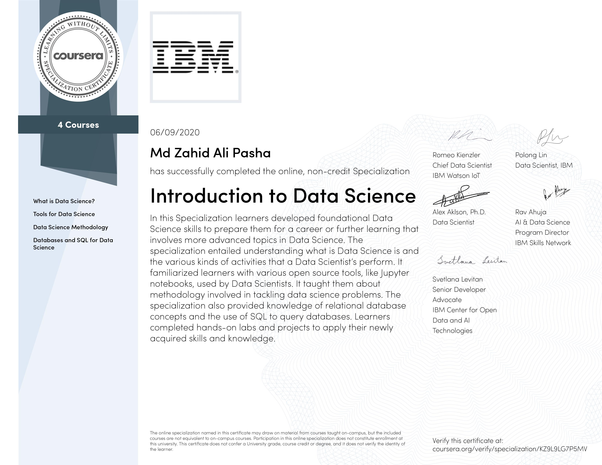

Zahid Pasha
Data Scientist
Email: contact@pasha.me
Portfolio
Education
Toronto Institute of Data Science and Technology (WecloudData), Toronto, Canada
Diploma in Applied Data Science and Big Data
Kingston University, London, UK
B.Eng (Hons) Aerospace Engineering & Astronautics
Professional Experiences
Data Science Intern
Beam Data, Toronto
February 2020 - Present
- Analyse business challenges, objectives and data requirements
- Preprocess data using MySQL, SQL Alchemy across scattered data sources
- Explore data and implications on predictions using Python, Pandas, Matplotlib, Seaborn
- Build classification and regression models using Random Forest, LGBM, XGBoost
- Present findings and analysis to clients to help improve strategies for costs, marketing and efficiency
Methods Analyst
Bombardier Aerospace, Toronto
May 2018 - June 2019
- Production Support on site for Cockpit Team at Bombardier, Downsview (Toronto)
- Completion of workbooks, investigate Manufacturing conflicts
- Planning and Sequencing future work to optimize productivity
- Formulate and apply Mathematical Modelling and other optimizing methods to interpret and analyse data
- Collect and analyse excel data from different streams and develop decision support visualizations as PPTs
- Develop and supply optimal time, cost, for program evaluation, review, or Change Management implementation
- Foresee future modification request for shims, blankets, etc as per other RFCs and PCRs to be incorporated
- Investigate discrepancies and snags, request RNCs or RFCs with detailed problem statements as necessary
- Review work order procedural manuals to determine critical tolerance of dimensions of design
- Coordinating Functional Test Procedure and to make sure the products conform to customer specifications
Certifications
IBM
Introduction to Data Science (Specialization)
